Debugging on IDE
IDE의 Built-in Debugger(내장된 디버거)를 사용하여 Javascript로 작성된 Dapp(Test Code) 디버깅
Prerequisites
Table of Contents
- Truffle Installation
- Creating a MetaCoin project
- Creating a package.json file
- Truffle Package Installation
- The Whole Shell Script
- On IntelliJ(or WebStorm) IDE Ultimate Edition
- Using OpenZeppelin
- Using MultiSigWallet
- On Visual Studio Code
Truffle Installation
Truffle을 npm을 사용하여 설치한다.
npm install -g truffle
Creating a MetaCoin project
Truffle의 명령어를 실행하기 위해서는 Truffle project가 필요. Truffle Boxes를 사용하여 MetaCoin box를 Truffle project로 사용.
Create a new directory for your Truffle project:
mkdir MetaCoin cd MetaCoinDownload ("unbox") the MetaCoin box:
truffle unbox metacoin
Note: 보다 자세한 내용을 위해 Truffle 공식 홈페이지의 Creating a project 참고.
Creating a package.json file
npm의 package를 사용하기 위해 package.json파일을 생성:
npm init --yespackage.json파일을 Commandline에서 수정하여 위해 json 패키지 설치:
npm install -g json
Adding Test Script
Note: OS별 환경변수의 차이로 각각 다른 Script 사용. Windows의 Powershell에서는 오류가 발생될 수 있으므로 CMD에서 수행 권장.
on Mac:
json -I -f package.json -e this.scripts.test='"node $NODE_DEBUG_OPTION ./node_modules/.bin/truffle test $FILES --network $NETWORK"'on Windows:
json -I -f package.json -e this.scripts.test='"node %NODE_DEBUG_OPTION% ./node_modules/truffle/build/cli.bundled.js test"'
Truffle Package Installation
Npm을 통해 Truffle Package 설치:
npm install truffle --save-devNote: IDE에서 디버깅하기 위해 필수로 필요.
The Whole Shell Script
The Whole shell script:
npm install -g truffle mkdir MetaCoin cd MetaCoin truffle unbox metacoin npm init --yes npm install -g json json -I -f package.json -e this.scripts.test='"node %NODE_DEBUG_OPTION% ./node_modules/truffle/build/cli.bundled.js test"' npm install truffle --save-devMac에서는 아래 명령어를 추가로 실행하거나 Shell Script를 변경해서 실행:
json -I -f package.json -e this.scripts.test='"node $NODE_DEBUG_OPTION ./node_modules/.bin/truffle test $FILES --network $NETWORK"'
On IntelliJ(or WebStorm) IDE Ultimate Edition
Note: Debugging Solidity Smart Contracts Inside of the IntelliJ IDE Tutorial을 기반으로 작성. This tutorial is for the paid version of IntelliJ or WebStorm.
Up-to-date installation of the IntelliJ (or WebStorm) IDE Ultimate Edition (Paid Version)
Truffle Project Open: 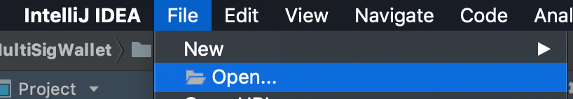
Or- 해당 디렉토리로 이동 후:
cd MetaCoin idea .
- 해당 디렉토리로 이동 후:
Inside of edit configurations, you will need to create a new run/debug configuration: 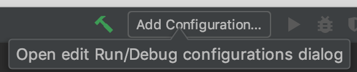 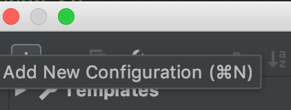 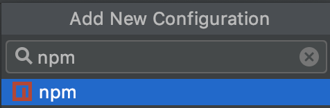 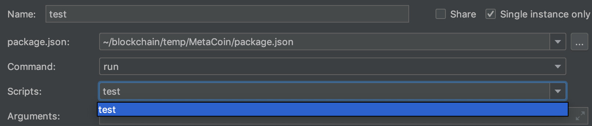 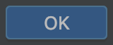
Run the debugger with the following breakpoints and examine how it works: 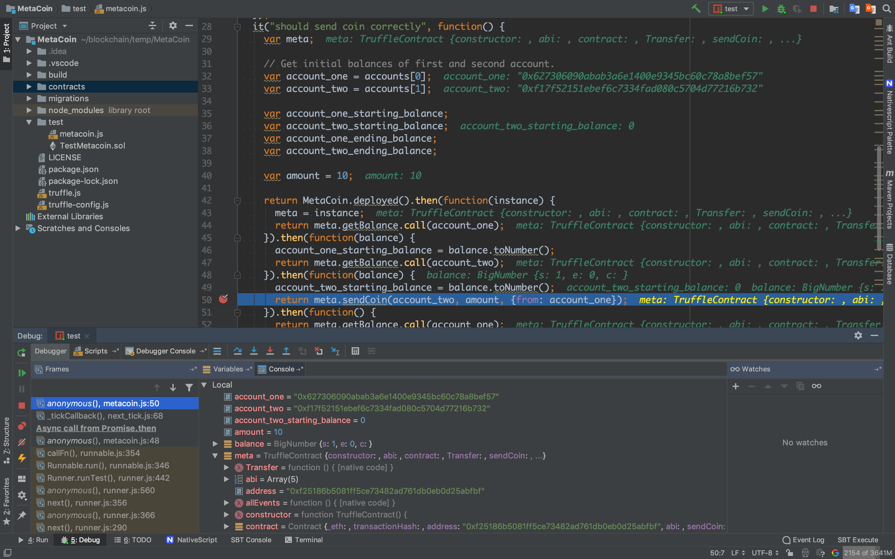
Debugger Console output: 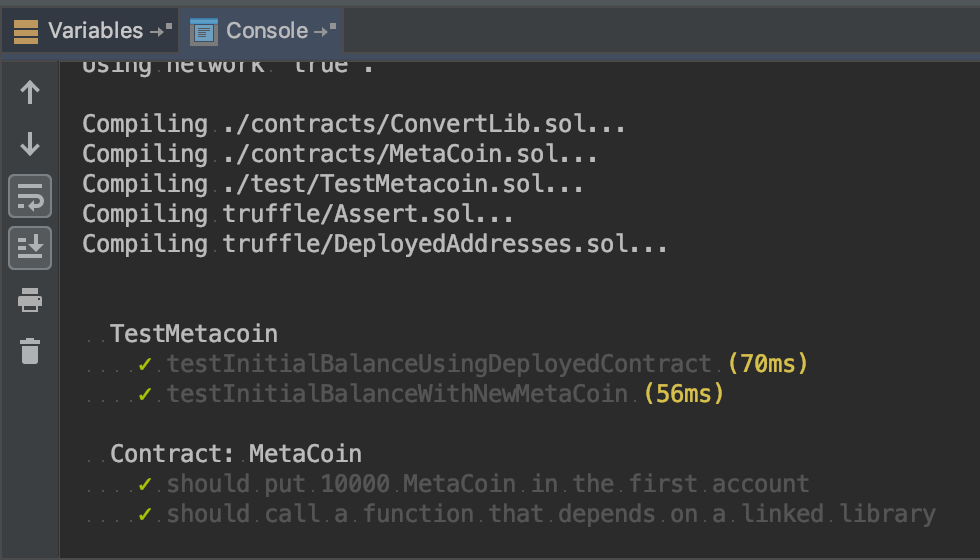
Using OpenZeppelin
-
Note: npm install 시 사용됨.
Source Code Clone or download: 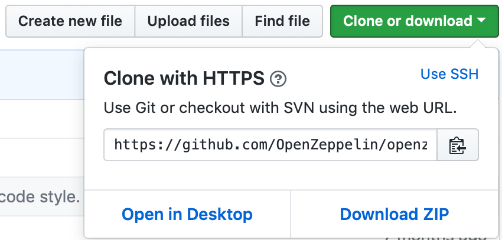
File:
truffle-config.json내용 모두 주석처리Note: a built-in personal blockchain을 사용하기 위함.
Note:
Ganache등의 Ethereum clients를 사용할 경우 networks의 development 설정하여 사용. See the Configuration section for more information.npm install실행으로 package 설치:npm installNote:
gyp ERR가 발생되어도 디버깅에 지장없음.Adding Test Script on a
./package.jsonFile:on Mac
... "scripts": { "test:debug": "node $NODE_DEBUG_OPTION ./node_modules/.bin/truffle test $FILES --network $NETWORK", ...on Windows
... "scripts": { "test:debug": "node %NODE_DEBUG_OPTION% ./node_modules/.bin/truffle test", ...
Using MultiSigWallet
Source Code Clone or download: 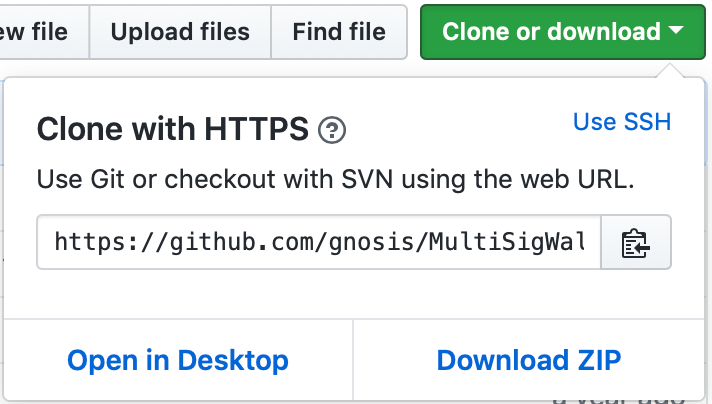
Npm의 truffle package를 최신 버전으로 재설치
npm install truffle@latest --save-devNote: 과거 버전인 경우 a built-in personal blockchain 사용이 안 될 수 있음.
나머지 과정은 Using OpenZeppelin과 동일
On Visual Studio Code
Truffle Project Open: 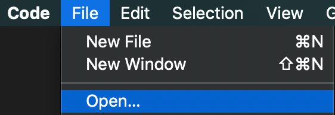
Or- 해당 디렉토리로 이동 후:
cd MetaCoin code .
- 해당 디렉토리로 이동 후:
Debug (Ctrl+Shift+X) 버튼 클릭:
톱니바퀴 모양 클릭(Configure or Fix
launch.json) 후 Node.js 선택: 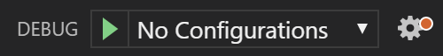 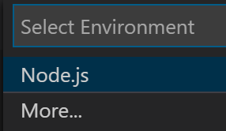File: launch.json에 아래 코드 추가:
{ "name": "run tests", "type": "node", "request": "launch", "program": "${workspaceRoot}/node_modules/truffle/build/cli.bundled.js", "args": ["test"], "cwd": "${workspaceRoot}", "outFiles": [ "${workspaceRoot}/test/**/*" ] }Run the debugger with the following breakpoints and examine how it works And Debugger Console output: 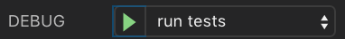 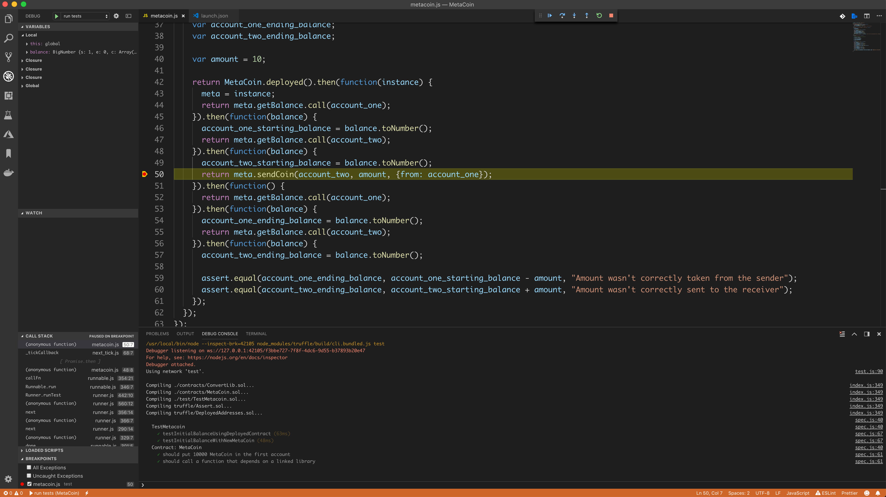